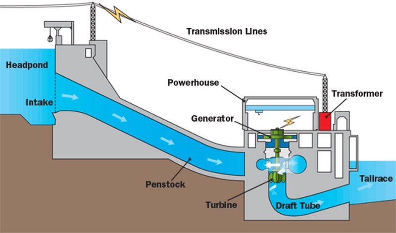

What is this?
A hydroelectric power station consists of turbines that rely on a gravity flow of water from the dam to turn a turbine to generate electricity. The water can be either released to the river downstream of the dam or pumped back into the reservoir and reused.

Generally, hydroelectric dams are built specifically for electricity generation and are not used for drinking or irrigation water. Hydropower provides 19% of the world's total electricity supply, and is used in over 150 countries, with 24 of these countries depending on it for 90% of their supply. The countries producing most hydroelectric energy are China, Canada, Brazil, USA, and Russia.
